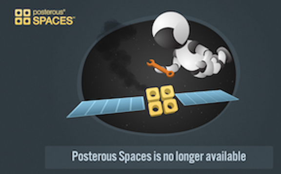

Demographically, I am early adopter and I have been using some of the tools that we reviewed in this class for a long time. Many of them I had never seen before and was very happy to learn about them. In the tools I reviewed (CritiqueIt, Evernote, Zotero, ResearchGate and Pocket) I had never used CritiqeIt or Pocket before and frankly neither of them will make it into my regular rotation. The additional tools that I used for this class were Voicethread, Vimeo, iMovie, GitHub, Brackets, QuickTime, DropBox, Google Drive, iPhoto, Google Documents, Gmail, BlackBoard, Feedly, Mendeley and of course the operating systems and browsers and the network that it is all built upon.
I would have liked for this class to focus a bit more on the context of all these tools, what it means to rely on free or ad-supported software and what we are actually agreeing to when we click yes to the Terms of Service.
While there is huge benefit, there is also a risk in using these tools in class and recommending them to our students. These two screenshots tell the story of a free blogging tool that shut its door and re-opened as a fee-based tools but with a guarantee of never ever going away. 
That is quite a promise to make.
Many others have made the point that we should not let tools get in the way of the teaching we doing. I agree and I would like to add that, in this class, the demand for our attention came from so many different platforms that it detracted from the objectives. In designing my future classes I will pay close attention to how many media I require my students to use to communicate. At one point during our group project I was in BlackBoard Course Content, BlackBoard Discussion, gmail, Google Docs, chat within Google docs, my blog and VoiceThread. I believe that paying attention to all of these things kept me from focusing on the content of the project. I need to follow the advice I give in a public speaking presentation that I do, have your story written (content done) before you start fiddling around with the tools that you are going to use present it.